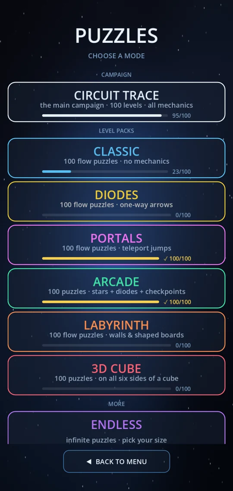

De meeste flow puzzels spelen zich af op een plat vierkant. Je ziet het hele bord, de randen zitten waar je ze verwacht en de hoeken zijn een makkelijk beginpunt. 3D-kubus neemt dat bord en vouwt het om een kubus.
Het is een gratis pakket van 100 levels in Circuit Trace, en het speelt als geen andere modus in de game. Je vindt het onder GAME MODES → 3D CUBE.



Zo werkt een 3D-kubuspuzzel
De regels zijn de klassieke: verbind elk paar gelijke stippen met een lijn, laat nooit twee lijnen kruisen en vul elk vakje. Wat verandert is het bord: elke kant van de kubus is een klein raster, en de zes kanten zitten aan hun randen aan elkaar vast.
Trek een lijn naar de rand van een kant en hij loopt gewoon door op de volgende. Een stip bovenop de kubus kan verbonden worden met zijn partner op de zijkant, of helemaal rondom op de achterkant. De uitweg van de ene kant ligt vaak op een andere.
De kubus draaien
Je ziet altijd maar drie kanten tegelijk, dus draaien hoort bij het oplossen:
- Swipe over een lege plek om de kubus een kwartslag te draaien.
- Sleep een lijn over de rand naar een kant die je niet ziet. De kubus rolt die kant in beeld en je lijn gaat mee, in één beweging, zonder je vinger op te tillen.
Het eerste level laat allebei zien met een handje dat het gebaar voordoet. Daarna sta je er alleen voor.
Waarom het moeilijker voelt dan een plat bord
Op een vierkant bord doen de randen veel van het werk. Een stip in een hoek kan maar twee kanten op, en lijnen langs de rand zijn bijna nooit fout. Dat zijn de eerste zetten die de meeste spelers doen.
Een kubus heeft geen randen en geen hoeken om op te leunen. Elk vakje heeft precies vier buren, waar het ook zit. Er is dus geen voor de hand liggend beginpunt. Je zoekt naar andere aanwijzingen: stippen die dicht bij elkaar zitten, kleuren met maar één logische route, en de krappe plekken waar drie kanten van de kubus samenkomen.
💡 Draai voordat je tekent. Bekijk de kubus rondom voordat je je eerste lijn trekt. Een stip op de achterkant vergeet je makkelijk, en die bepaalt vaak welke kant de kleuren op de voorkant op moeten.
Van 3×3 tot 4×4
Minder kleuren klinkt makkelijker, maar het is andersom. Met minder lijnen moet elke lijn verder, en één kleur kan om drie of vier kanten van de kubus lopen. Elk level is gebouwd rond één bedoelde oplossing en beoordeeld door dezelfde solver die we voor elk pakket gebruiken, dus de moeilijkheid loopt geleidelijk op van CUBE I tot CUBE X.
Vijf tips voor je eerste kubussen
- Zoek de hoeken van de kubus. Waar drie kanten samenkomen, raken drie vakjes elkaar. Daar is het druk, dus beslis vroeg welke lijnen erdoor gaan.
- Eerst paren op dezelfde kant. Een kleur met beide stippen op één kant heeft meestal de kortste, zekerste route. Teken hem en het bord wordt kleiner.
- Volg een lijn rondom. Gaat een kleur over een rand, draai de kubus dan mee. De hele route in één keer zien is makkelijker dan hem onthouden.
- Elk vakje telt. Een level is pas opgelost als de hele kubus gevuld is. Ontstaat er op de achterkant een groepje lege vakjes, dan moet een lijn in de buurt erdoorheen.
- Gebruik een hint als je vastzit. Valt de hint op een kant die je niet ziet, dan draait de kubus zodat je hem ziet.
Gratis, en het nieuwste van zeven pakketten
3D-kubus komt bij de hoofdcampagne, Classic, Diodes, Portals, Arcade en Labyrint. Samen 700+ puzzels, allemaal gratis te spelen. De volledige regels en hoe elke sector oploopt staan op de 3D-kubuspagina (Engels).
Meer strategie: de gids met gevorderde strategieën gaat over gebieden lezen en zetten testen, op een kubus extra handig. Voor een snelle opwarmer speel je de dagpuzzel in je browser.
Download Circuit Trace op Google Play en open GAME MODES → 3D CUBE.
Veelgestelde vragen
Bestaat er een 3D-kubuspuzzel voor Android?
Ja. Circuit Trace heeft een gratis 3D-kubusmodus met 100 flow puzzels op alle zes kanten van een kubus. Hij zit in de gratis Circuit Trace-game op Google Play.
Hoe draai je de kubus?
Swipe over een lege plek om hem een kwartslag te draaien. Je kunt ook een lijn over de rand slepen naar een verborgen kant; de kubus rolt dan mee met je lijn.
Lopen lijnen echt om de randen heen?
Ja. Een lijn die de rand van een kant bereikt, loopt door op de kant ernaast, dus één kleur kan om meerdere kanten heen lopen.